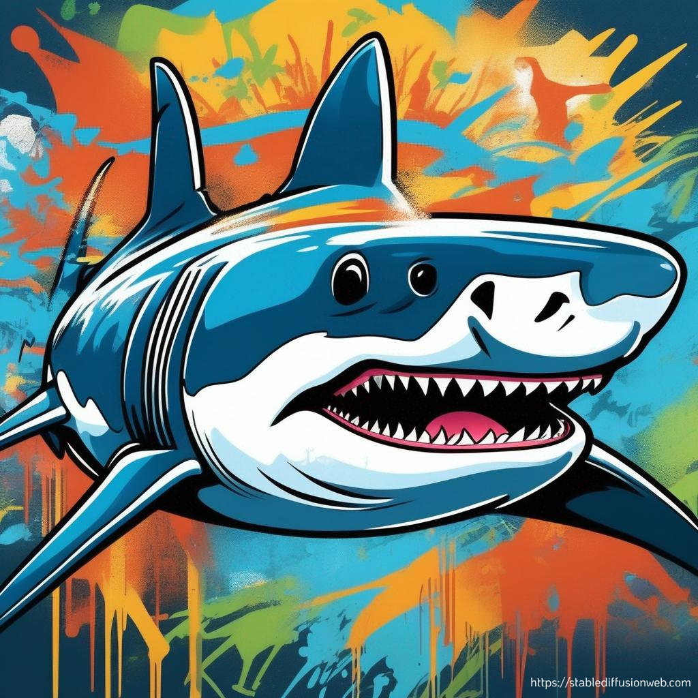

The Unknowns of the "White" Shark

| No |
Fakta Menarik |
Visualisasi |
| 1 |
seekor hiu bahkan tidak memiliki satupun tulang keras di tubuhnya. Adapun tulang rawan adalah jaringan yang lebih lunak dan lebih fleksibel daripada tulang. Kerangka hiu tersusun dari kekuatan tulang rawan yang berbeda dan beberapa area lebih fleksibel daripada yang lain. Kerangka hiu tersusun dari kekuatan tulang rawan yang berbeda dan beberapa area lebih fleksibel daripada yang lain.
|
|
| 2 |
Hiu memiliki tulang lunak yang massa jenisnya lebih ringan dan memungkinkan hiu bertahan dan berenang jarak jauh tapi tetap hemat tenaganya.
|
|
| 3 |
Satu-satunya bagian tulang keras pada hiu hanya ada di giginya, hal inilah yang membuat banyak fosil gigi ikan hiu yang ditemukan di berbagai tempat di dunia. Gigi hiu secara alami dilapisi fluoride yang menjaga gigi hiu dari berlubang sepanjang usianya.
|
|
| 4 |
Diperkirakan hiu bisa kehilangan lebih dari 30.000 gigi seumur hidupnya. Uniknya, hiu bisa menumbuhkan gigi barunya dalam waktu 24 jam.
|
|